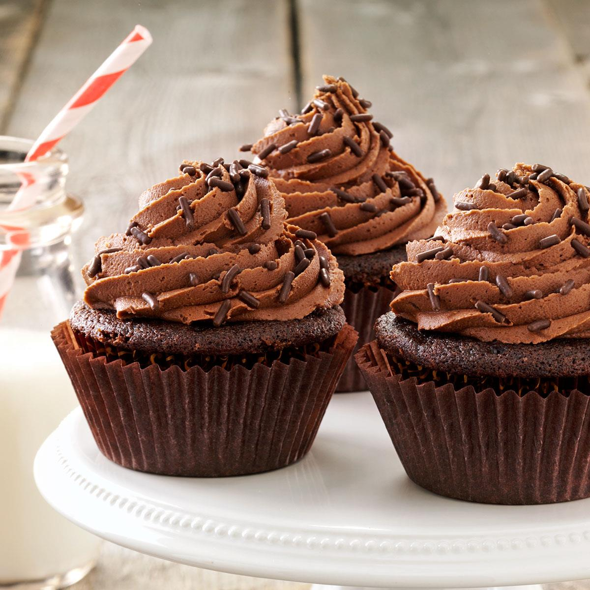

Receta de cupcakes de chocolate
- 250 gramos de harina de fuerza
- 200 gramos de cacao en polvo
- 175 gramos de azúcar
- 100 gramos de mantequilla sin sal
- 10 gramos de levadura
- 300 ml de leche
- 4 huevos grandes
- Una pizca de sal
- Pepitas de chocolate (Opcional)
-------------------------------------❤-------------------------------------
Esta es una de las recetas más conocidas y que más gustan a la hora de hacer cupcakes, ya que la base de chocolate es una de las más consumidas junto con la de vainilla, sobre todo porque combinan con muchos otros ingredientes y son de las más simples de elaborar. Vamos con la receta para que os animéis a prepararla en casa..
Preparad primero los ingredientes, tenedlos ya a mano en las medidas que os hemos indicado, para que el proceso de elaboración sea más rápido y cómodo. También dejad lista el molde que vayáis a empleara para hacer los cupcakes, y en los huecos del mismo colocad las cápuslas (los moldes de papel) con las que queráis decorar los mismos. Y el horno siempre hay que precalentarlo, a unos 180ºC. Con todo esto ya hecho, vamos a ir preparando nuestras bases de cupcakes de chocolate.
En un recipiente amplio vamos a tamizar y me mezclar tanto la harina como la levadura, y mezclamos junto al cacao, la sal y el azúcar, el cual puede ser moreno o blanco. Una vez estén mezclados, los echamos en el recipiente donde vayamos a batir finalmente la masa para los cupcakes. Agregamos entonces la mantequilla, que debe estar un poco derretida y blandita, junto a la leche y los huevos, y batimos todo a velocidad media, hasta conseguir una pasta cremosa, con todos los ingredientes bien integrados. Por último, de forma opcional, le puedes añadir un buen puñado de pepitas de chocolate, o chocolate troceado, y repartirlo bien por la masa, para que queden más ricos estos cupcakes de chocolate.
Con esa masa resultante vamos a rellenar los moldes dónde vayamos a hornear, dejando aproximadamente un tercio de su volumen libre, para que los cupcakes suban sin salirse demasiado de los mismos. Metemos la bandeja o bandejas en el horno y horneamos durante unos 15-20 minutos, manteniendo la temperatura a 180ºC, a ser posible con el calor por arriba y por abajo.
Siempre hay que comprobar antes de sacar los cupcakes que están bien hechos por dentro, para evitar que queden crudos. Cuando lo hayamos comprobado y los tengamos en su punto de horneado justo tanto por fuera como por dentro, los sacamos del horno, los desmoldamos y los dejamos enfriar a temperatura ambiente, mejor si es sobre unas rejillas para que por debajo no "suden" los mismos.
Una vez que ya estén bien fríos, ya se pueden comer estos cupcakes de chocolate sin necesidad de decorarlos, pero os recomendamos darle un toque de decoración extra, para que queden con un mejor aspecto visual y queden con una combinación de sabores más completa y sabrosa.
Podemos adornarlos como queramos, empleando buttercream, glasa, nata montada, fondant, frutas... lo que más nos guste. Nosotros los solemos hacer con una buttercream de chocolate que añadimos con la ayuda de la manga pastelera. En la página principal tenéis detallada la receta y cómo hacerla de forma sencilla. De todas formas son unos cupcakes que quedan bien con casi cualquier cobertura que queráis emplear.
Esperamos que te animes a hacer estos cupcakes de chocolate y que les guste el resultado, tanto que los volveras a repetir en más ocasiones.

 𝙍𝙚𝙜𝙧𝙚𝙨𝙖𝙧 𝙖𝙡 𝙗𝙡𝙤𝙜
𝙍𝙚𝙜𝙧𝙚𝙨𝙖𝙧 𝙖𝙡 𝙗𝙡𝙤𝙜